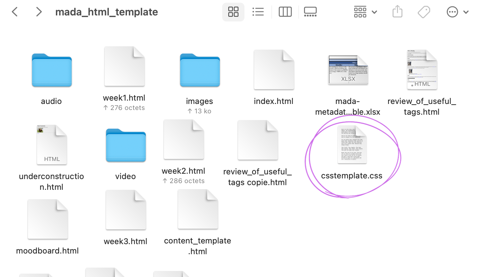
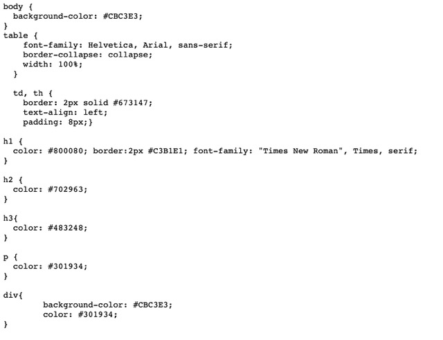
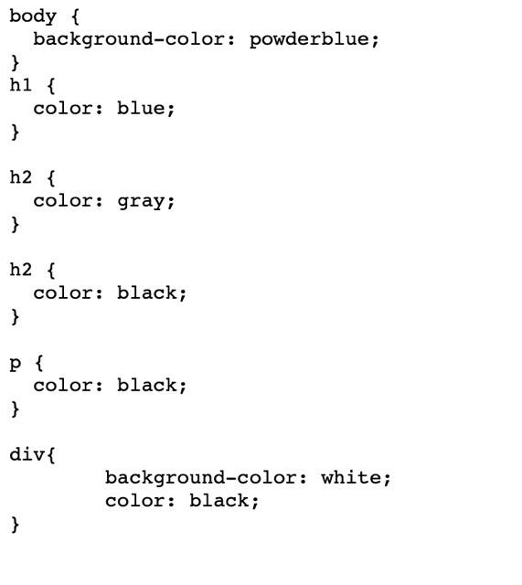
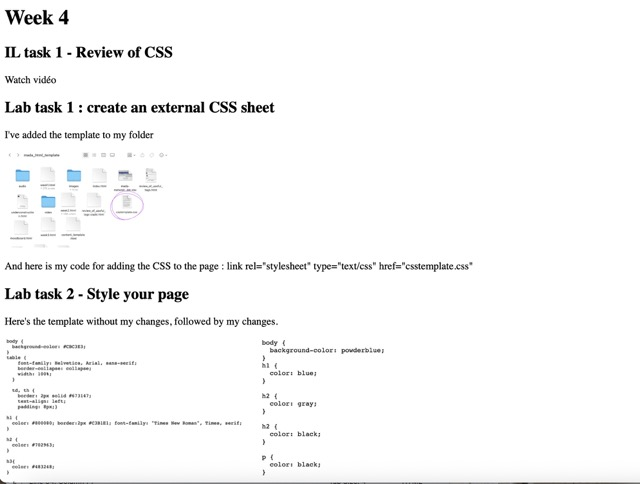
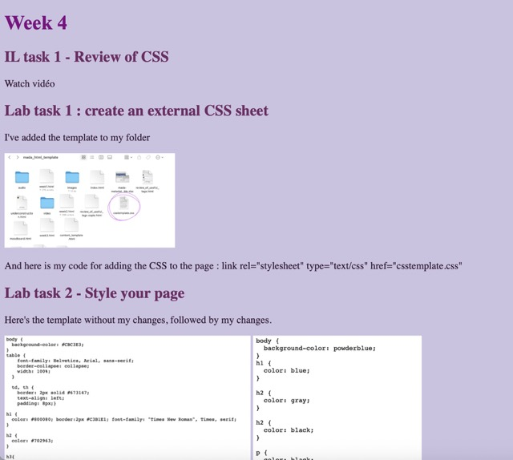

Watch vidéo
I've added the template to my folder
And here is my code for adding the CSS to the page : link rel="stylesheet" type="text/css" href="csstemplate.css"
Here's the template without my changes, followed by my changes.
 To find the different shades of mauve, I used the website www.htmlcolorcodes.com
Finally, here's what my page looked like before I added the css and what it looks like now.
| Before | After |
|  |  |